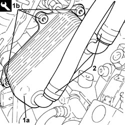

1084C10 ENGINE OIL HEAT EXCHANGER - R + R
- Path
- Procedures > 10 ENGINE > 1084 ENGINE LUBRICATION > 1084C ENGINE OIL COOLING CIRCUIT > 1084C10 ENGINE OIL HEAT EXCHANGER - R + R
- Kind
- repair procedure (removal / refitting; the operation number is the code)
- Applies to
- engines: 2.2 JTS, 3.2 JTS; all production periods
- Interactive page
- https://sloeber94.github.io/elrnDB-aBrrSpdr/en/#/946001997
Applies to: engines: 2.2 JTS; all production periods
 Removing
Removing
 Refitting
Refitting- Position the vehicle on a lift.
Op. 5530B52 BATTERY SUPPORT/DRIP TRAY - R.R
1. Undo the radiator coolant drain plug.

Applies to: engines: 2.2 JTS; all production periods
1. Loosen the bands and disconnect the engine coolant inlet and outlet pipes, engine oil heat exchanger side.
2. Undo the bolts (2a) and remove the engine oil heat exchanger (2b).

Applies to: engines: 2.2 JTS; all production periods
Refitting
Removing1. Place the engine oil heat exchanger (1a) in its housing and secure it using the bolts (1b).
2. Connect the engine coolant inlet and outlet pipes, engine oil heat exchanger side and tighten the bands.

Applies to: engines: 2.2 JTS; all production periods
- Tighten the coolant drain plug to the radiator.
Op. 5530B52 BATTERY SUPPORT/DRIP TRAY - R.R
Op. 0010T20 ENGINE COOLANT - CHANGE
- Remove the vehicle from the lift.
Applies to: engines: 3.2 JTS; all production periods
Removing
RefittingOp. 0010T84 COOLANT FOR AIR CONDITIONING SYSTEM - DEHYDRATE AND REPRESSURIZE
Op. 0010T20 ENGINE COOLANT - CHANGE
Op. 1080B92 LEFT UPPER LAMBDA SENSOR - R.R.
Op. 7055B54 UNDER ENGINE PROTECTION/GUARD - R.R.
Op. 1072C40 LEFT EXHAUST MANIFOLD HEAT SHIELD - R.R.
Op. 1084A16 OIL DIPSTICK PIPE - R.R
Op. 1072C30 LEFT EXHAUST MANIFOLD - R + R AND REPLACE GASKET
Applies to: engines: 3.2 JTS; all production periods
Refitting
RemovingOp. 1084C15 ENGINE OIL HEAT EXCHANGE MOUNT R R
Op. 1072C30 LEFT EXHAUST MANIFOLD - R + R AND REPLACE GASKET
Op. 1084A16 OIL DIPSTICK PIPE - R.R
Op. 1072C40 LEFT EXHAUST MANIFOLD HEAT SHIELD - R.R.
Op. 7055B54 UNDER ENGINE PROTECTION/GUARD - R.R.
Op. 1080B92 LEFT UPPER LAMBDA SENSOR - R.R.
Op. 0010T20 ENGINE COOLANT - CHANGE
Op. 0010T84 COOLANT FOR AIR CONDITIONING SYSTEM - DEHYDRATE AND REPRESSURIZE
Topics linked from this page (10)
- 0010T20 ENGINE COOLANT - CHANGE
- 0010T84 COOLANT FOR AIR CONDITIONING SYSTEM - DEHYDRATE AND REPRESSURIZE
- 1072C30 LEFT EXHAUST MANIFOLD - R + R AND REPLACE GASKET
- 1072C40 LEFT EXHAUST MANIFOLD HEAT SHIELD - R.R.
- 1080B92 LEFT UPPER LAMBDA SENSOR - R.R.
- 1084A16 OIL DIPSTICK PIPE - R.R
- 1084C15 ENGINE OIL HEAT EXCHANGE MOUNT R R
- 5530B10 BATTERY - R+R
- 5530B52 BATTERY SUPPORT/DRIP TRAY - R.R
- 7055B54 UNDER ENGINE PROTECTION/GUARD - R.R.